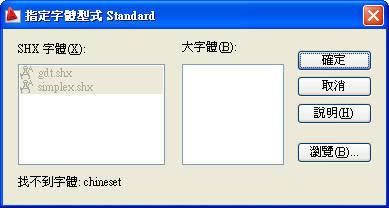
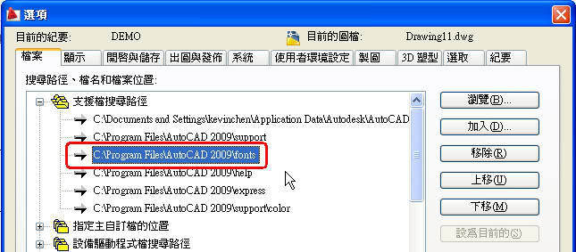

2007版的AUTO CAD....一打開檔案,
就跳出一個視窗說＂指定文字型式standard＝＞沒有字體＂
如果關掉此視窗....畫面只有出現圖框...文字跟數字的部分都沒有顯示出來..到工具列的文字型式去找.. 也都沒有其他字型...
請問有誰可以幫幫我？知道如何去增建文字型式檔或其他可以出現文字數字的方法...
讓文字.數字可以再出現！我會很感恩的。。。

如果發生上述情形，因為字型支援資料夾路徑遺失，請先把個案設定重置，方法如下，有問題請再提~
方法1.請使用「選項」OPTIONS →「個案設定」→ 將目前的個案設定<<未具名個案設定>> → 點選「重置」後 → 選擇 是 → 關閉AutoCAD程式 → 重新開啟AutoCAD程式
方法2.請使用「選項」OPTIONS →「支援檔搜尋路徑」→「檔案」→「加入」→「瀏覽」...設定路徑即可。
AutoCAD 2007 字型路徑:
C:\Program Files\AutoCAD 2007\fonts
